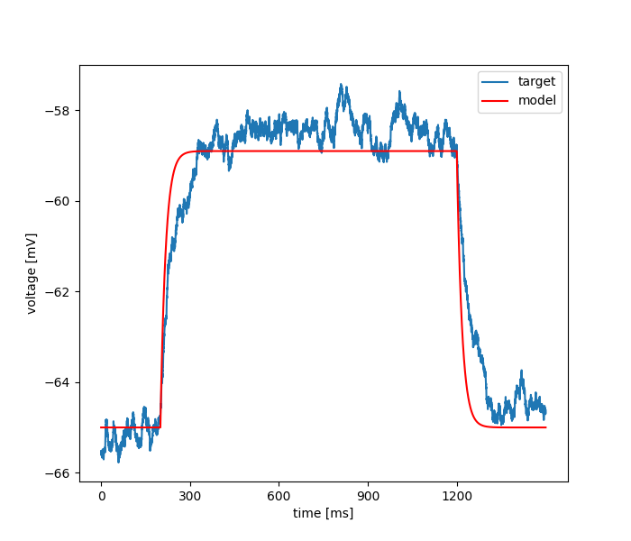

Fri Aug 23 11:47:19 2024
Optimization of load_new_passive_3dscale.hoc based on: /home/tamogh/neuroptimus/neuroptimus/new_test_files/testcase_3hocfiles/obs_data.dat
Results
| Parameter Name | Minimum | Maximum | Optimum |
|---|---|---|---|
| cm | 0.0 | 3.0 | 0.26332772911188734 |
| Ra | 0.0 | 200.0 | 199.95331549540492 |

seed = 1234
current_algorithm = {'BAYESIAN_INFERENCE': {'prior_mean': [1.2, 110], 'prior_std': [3, 80], 'ndim': '2', 'nwalkers': '6', 'starting_point': [1.2, 115], 'noise': 'colour', 'D': 10, 'lamb': 0.02, 'sigma': 0.1}}
num_params = 2
boundaries = [[0.0, 0.0], [3.0, 200.0]]
starting_points = None
algorithm_parameters = {'prior_mean': [1.2, 110], 'prior_std': [3, 80], 'ndim': '2', 'nwalkers': '6', 'starting_point': [1.2, 115], 'noise': 'colour', 'D': 10, 'lamb': 0.02, 'sigma': 0.1}